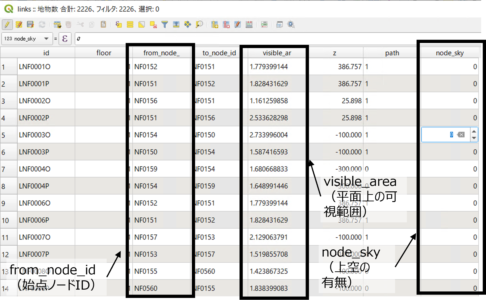

参考：歩行ネットワークデータの生成方法
ここでは、歩行シミュレーションに用いた歩行ネットワークデータの生成方法の概要を記載します。
生成方法
3D都市モデルデータから、車道・歩道等のLOD1に該当するデータを抽出し、JSONデータ（道路外形を表すポリゴンデータ）とします。
- 本業務ではPythonでXML解析を行います。
gml: boundedByにて、「ObjectType」として以下のいずれかに定義されているオブジェクトを取得します。
- Road（道路）
- Sidewalk（歩道）
取得したオブジェクトのgml: LinearRingより、各ポリゴンの端点のx、y、z座標を取得します。（下記図はJSONデータイメージ）
- 取得した座標をジオメトリ情報として格納し、jsonファイルを生成します。（下記図はJSONをQGISで表示したイメージ）
JSONファイルをもとに、下記手順で道路枠線データを抽出し、歩行ネットワークを構成するリンクデータ、ノードデータ（いずれもshpデータ）を出力します。
- QGISの「プロセシングツール」内のツールを使用します。（下記図は出力されたリンクデータ、ノードデータをQGISで可視化したイメージ）
- 「融合（dissolve）」：インプットデータはJSONファイルです。
- 「ポリゴンを線に変換」
- 「ジオメトリの簡素化」
- 「線をセグメントに分解」：リンクデータが出力されます。
- 「頂点の抽出」：ノードデータが出力されます。
横断歩道、階段、歩車共存道路の情報を手動補完し、不自然な道路横断がおこならないようにノード位置の微修正を行います。
- QGIS上で地物の編集を行います。
横断歩道、階段、歩車共存道路の有無をGoogle Mapsで確認します。
抽出されたリンクデータにはないデータを、QGISの「スナップオプション機能」を使用し、「線の地物を追加」でリンクを生成します。
横断歩道周辺のノードを、QGISの「地物の移動」を利用して調整します。
歩行ネットワーク上の、横断歩道に設置された歩行者用の信号の有無の情報を補完します。
- QGIS上で属性を直接編集します。
ネットワーク上の各リンクに接続する横断歩道に設置された歩行者用の信号の有無をGoogle Mapsで確認します。
リンクデータに対して、QGIS上で属性テーブルを開き、横断歩道や信号の有無のデータを付与します。
イベント実施に関するデータを、ノードデータに付与します。
- QGIS上でデータを付与します。
下記情報を含むcsvデータを用意します。
- node_id：イベントが実施されるノードのID
- x, y, z：イベントが実施されるノードの位置座標
- attractor：イベントの実施規模（面積）
- signage：広告の有無（広告がない場合は0、広告がある場合は1
「属性テーブルで結合（table join）」機能により、ノードデータに対して、上記csvのデータを付与します。
歩行モデルに使用する視野の情報として、平面上の可視範囲を計算し、リンクデータに付与します。
- QGISの「プロセシングツール」内の機能を下記手順で使用します。
- 「ウェッジバッファを作成」
- 「ウェッジバッファ」とは、ある点から楔形（扇形）に生成されるバッファのことです。
- パラメータは下記のように設定します。
- 「方位角」：リンク端点から次のノードへの仰角
- 「ウェッジ幅」：170度
- 「外形」：リンク長
- 「切り抜く（clip）」：JSONファイルとウェッジバッファの重なり部分を抽出します。
- 「ジオメトリ属性を追加」：重なり部分の面積を算出します。
- 「属性テーブルで結合」：リンクデータに情報を付与します。
各リンクの始点のノードの位置における上空の建物（床面）の有無をリンクデータに付与します。
- QGIS上で属性を直接編集します。
3D都市モデル（CityGML）を閲覧できるビューワー（本業務ではFZK Viewerを使用）にて、ネットワーク上の各ノード位置において上空に建物（床面）があるかを目視で確認します。
リンクデータに対して、QGIS上で属性テーブルを開き、床面の有無の情報を付与します。
- 床面がある場合は0、床面がある場合は1を入力します。
視界情報を計算し、リンクデータに情報を付与します。 
上記の手順により生成されたshpデータをcsvデータに出力します。
QGIS上で、ノードデータ、リンクデータに対して、「エクスポート」>「新規ファイルに地物を保存」を行います。
ノードデータを「network_node.csv」、リンクデータを「network_link.csv」とします。これらのデータを、artisoc Cloudに読み込んでいます。
ノードデータのカラムは次のとおりです。
- node_id：ノードのID
- x, y, z：ノードの位置座標
- attractor：アトラクタの強さ（イベント実施規模）
- signage：広告有無（0：広告なし、1：広告あり）
リンクデータのカラムは次のとおりです。
- link_id：リンクのID
- from_node_id：リンクの始点ノードのID
- to_node_id：リンクの終点ノードのID
- visible_area：視界情報
- floor：階数情報
- z：リンクの始点のz座標
- path：横断歩道、信号等の有無